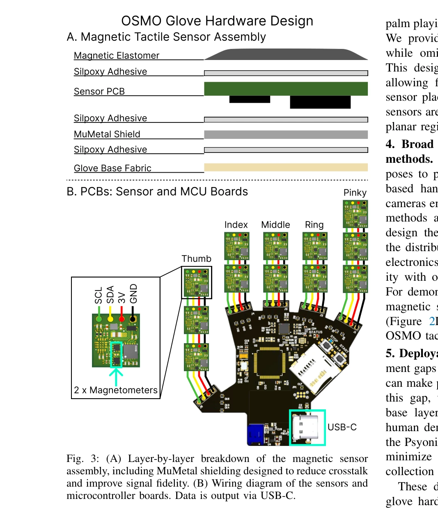

Essence

Fig. 1: (A) The OSMO tactile glove for collecting in-the-wild
OSMO는 인간의 촉각 데이터를 캡처하는 오픈소스 웨어러블 촉각 장갑으로, 촉각-시각 embodiment 격차를 최소화하여 인간 시연만으로 로봇 접촉 조작 정책을 학습할 수 있게 한다.
저자: Jessica Yin, Haozhi Qi, Youngsun Wi, Sayantan Kundu, Mike Lambeta, William Yang, Changhao Wang, Tingfan Wu, Jitendra Malik, Tess Hellebrekers | 날짜: 2025-12-09 | URL: https://arxiv.org/abs/2512.08920
Fig. 1: (A) The OSMO tactile glove for collecting in-the-wild
OSMO는 인간의 촉각 데이터를 캡처하는 오픈소스 웨어러블 촉각 장갑으로, 촉각-시각 embodiment 격차를 최소화하여 인간 시연만으로 로봇 접촉 조작 정책을 학습할 수 있게 한다.
Fig. 1: (A) The OSMO tactile glove for collecting in-the-wild

Fig. 3: (A) Layer-by-layer breakdown of the magnetic sensor
총평: OSMO는 웨어러블 촉각 센싱 분야에서 주목할 만한 하드웨어 기여를 하며, 인간-로봇 skill transfer에서 촉각 정보의 중요성을 실증적으로 입증했다. 완전 공개 설계와 다양한 hand-tracking 호환성은 커뮤니티 영향력을 높일 것으로 예상되나, 단일 작업 평가와 로봇 플랫폼 제한성이 일반화 가능성에 대한 의문을 남긴다.